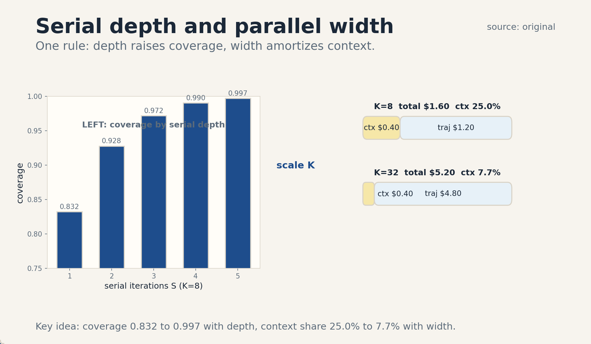
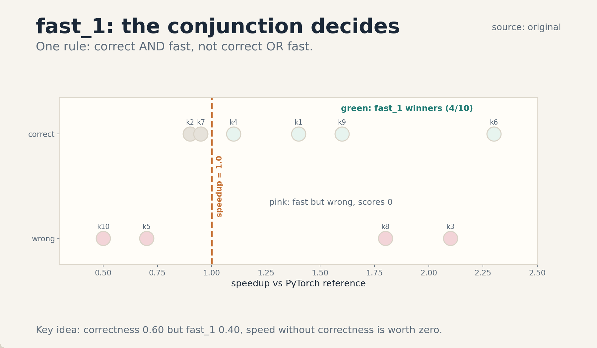
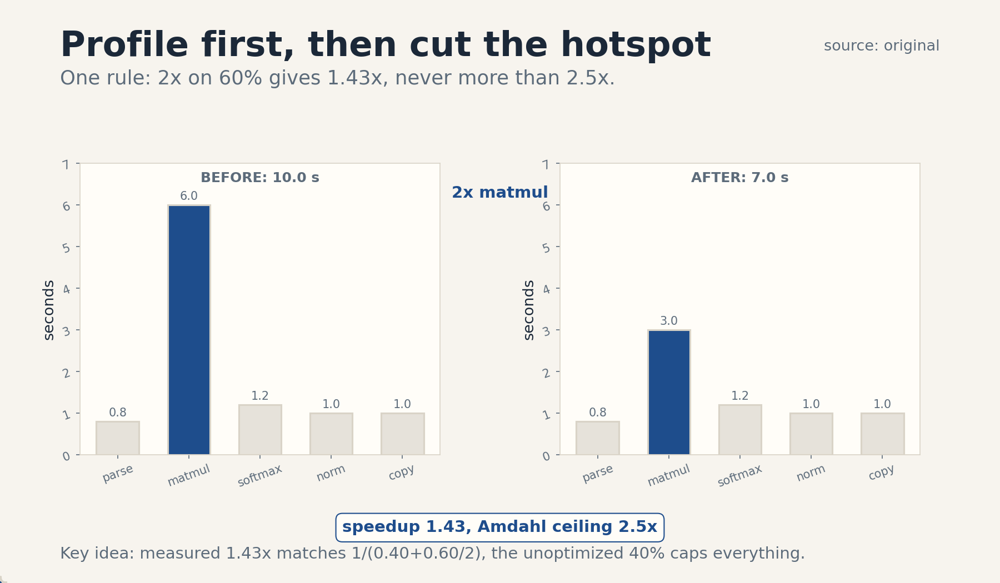

U05 · Software-engineering and kernel agents
U05 , Software-engineering and kernel agents
Course: Stanford CS329A, Autumn 2025. Official session 13 (Nov 3), Agentic Frameworks for Software Engineering. Baseline: 2026-10-07.
Claim class: mechanisms are taught from the requested inventory with SOURCE
ATTRIBUTION PENDING. Paper titles come from the verified official schedule
(see ../source_manifest.md). No paper contents were individually inspected
by this builder. Toy numbers are computed and traceable. No benchmark
numbers are claimed.
Unit objectives
After this unit the learner can: split a software task into context, generation, and selection, scale serial and parallel test-time compute for code, ground edits in executed tests, read KernelBench at mechanism level, trade performance against correctness, write an agent-system interface, profile before optimizing, handle flaky tests, keep hidden tests hidden, sandbox untrusted code, reproduce a run, and roll back a bad change.
Dependencies
P12 (PyTorch, tensors, numerics), P15 (hardware), P20 (tools, agent
state), P22 (experimental method). Local remediation is inside C07 and
C11. The shared bridges live at ../shared/prerequisites/.
Four-way link used in this unit
Intuition: code is checkable, so the agent should write tests next to edits and let execution decide. Equation: coverage = 1 - (1 - p)^K, speedup = T_old / T_new. Code: a loop of edit, run tests, repair. Observation: parallel samples amortize context cost, and speed without correctness is worth zero.
C01 CodeMonkeys
1. Source mapping, scope, objectives, dependencies. Session 13, Agentic Frameworks for Software Engineering. Reading pointer: CodeMonkeys: Scaling Test-Time Compute for Software Engineering (SOURCE ATTRIBUTION PENDING). Scope: test-time compute scaling aimed at real GitHub issues. Objective: define serial and parallel scaling and compute their cost split on a toy. Dependencies: P20, P22.
2. Motivating question and tiny toy. Question: for one bug report, should the agent think longer on one attempt or try many short attempts? Toy: 8 issues. Each trajectory has solve probability p = 0.36. With K = 8 parallel trajectories, coverage = 1 - (1 - 0.36)^8 = 1 - 0.64^8 = 1 - 0.0281 = 0.9719.
3. Plain-language mental model. Split the job into three parts: find the relevant files (context), write candidate fixes (generation), and pick the winner (selection). Scale each part on its own axis. Serial scaling means more repair iterations per attempt. Parallel scaling means more attempts. Pick the mix that buys the most coverage per dollar.
4. Variables, units, shapes, assumptions. Issue i. Trajectory t: a multi-turn (edit, run tests) loop with S serial iterations. K: number of trajectories. Coverage: fraction of issues with at least one good candidate. Cost: context cost C_ctx once per issue plus K times trajectory cost. Assumptions: issues are independent, test outcomes are honest, cost is linear in tokens.
5. Justified derivation or mechanism. The mechanism is test-time scaling split by axis. Serial iterations raise p, the per-trajectory solve rate, because the model repairs its own failures against executed tests. Parallel samples raise coverage through the 1 - (1 - p)^K law even when p stays fixed. The split matters because context finding is a fixed cost: with many trajectories, one context pass is amortized over K samples, so a simple read-every-file method becomes affordable.
6. Computed numerical example using the same objects. Toy: 8 issues, S = 3 serial iterations, K = 8 trajectories. Context cost $0.40 per issue, paid once. Trajectory cost $0.05 per serial iteration, so $0.15 per trajectory. Total per issue: 0.40 + 8 * 0.15 = $1.60. Context share: 0.40 / 1.60 = 25 percent. At K = 32 the total is 0.40 + 32 * 0.15 = $5.20 and the context share falls to 0.40 / 5.20 = 7.7 percent. Coverage at K = 8 is 0.9719 from item 2.
7. Algorithm and original minimal implementation.
def codemonkeys_issue(issue, s_iters, k_traj):
context = read_relevant_files(issue) # paid once
candidates = []
for _ in range(k_traj):
edit = draft_edit(issue, context)
for _ in range(s_iters): # serial scaling
result = run_tests(edit)
if result.passed:
break
edit = repair(edit, result.trace)
candidates.append(edit)
return select(candidates) # C02
8. Correctness checks and expected output. Check: context is computed once, outside the trajectory loop. Check: the loop breaks early when tests pass. Check: the toy cost at K = 8 is $1.60 per issue.
9. Complexity, memory, statistical efficiency, stability, practical costs. Cost is O(K * S) trajectories per issue plus one context pass. Memory: each trajectory holds its own edit history. Statistical efficiency: coverage saturates as K grows, the marginal trajectory buys less. Stability: variance across issues is high, report coverage with standard errors.
10. Nearest alternatives and precise selection boundaries. Single-shot generation: pick when the fix is small and known. Serial-only scaling: pick when one good attempt is close and needs repair. Parallel-only: pick when attempts are cheap and diverse. Both axes: pick when the budget allows and coverage is the goal.
11. Failure case, broken assumption, counterexample. Break test honesty: the trajectory’s own tests are written by the same model that writes the edit. A weak test suite passes a wrong edit, serial iterations then polish a bad fix. Counterexample: K trajectories that all copy the same wrong plan: parallel samples with no diversity buy nothing.
12. Research reading and falsifiable extension. Reading: CodeMonkeys (SOURCE ATTRIBUTION PENDING). Extension: hypothesis: at fixed total budget, the serial-parallel mix with the highest coverage is issue-dependent. Falsification: one fixed mix wins on every issue family.
13. Breadth recall, deep oral ladder, unfamiliar transfer. Recall: define serial and parallel scaling. Ladder: define the three-way split, run the toy, justify the cost split, code the loop, state the saturation cost, compare with single-shot, debug the weak-test failure, critique test honesty, design the mix experiment. Transfer: the same split (context, generation, selection) fits document-editing agents.
14. Lab/exercises with answers separated.
E1.1: recompute the per-issue cost at S = 5, K = 16 with the toy
rates. E1.2: explain context amortization in two sentences. E1.3:
name the weak-test failure. Answers: ../keys/u05_answers.md.
15. Visual units, provenance, accessibility, audit rows.
PNG ../visuals/u05_fig01.png: serial coverage bars plus the cost
split at K = 8 and K = 32, one rule: parallel width amortizes
context. Source: original. Alt text: two panels, coverage by
serial depth, cost stack showing context share falling with K.
Logged in ../visual_audit.md.

C02 test-time code search
1. Source mapping, scope, objectives, dependencies. Session 13. Scope: the sample-filter-select pipeline for code at test time. Objective: compute coverage and selection precision on a toy. Dependencies: C01.
2. Motivating question and tiny toy. Question: ten samples are drawn, at most one is right. How do you find it? Toy: K = 10, per-sample pass probability 0.30. Coverage (pass@10) = 1 - 0.70^10 = 1 - 0.0282 = 0.9718. The search then needs a filter that finds the right one.
3. Plain-language mental model. Sampling makes options. Tests rank options. A final chooser picks the winner. The three stages fail in different ways: sampling can miss, tests can misrank, the chooser can tie-break badly. Fix the stage that loses the most.
4. Variables, units, shapes, assumptions. K samples. Filter: model-generated tests with precision pr and recall rc. Selection: vote or model choice over survivors. Assumptions: the filter is cheaper than a human review, survivors are diverse enough that one is right.
5. Justified derivation or mechanism. The mechanism is two-stage selection. Stage one (test voting) filters cheaply: candidates that fail generated tests are dropped. Stage two (a dedicated selection trajectory) compares the survivors with fresh tests written to separate them. The split works because voting is cheap and the model judge is expensive: spend the judge only on the shortlist.
6. Computed numerical example using the same objects. Toy: 10 candidates, exactly 3 are correct. Generated tests have precision 0.80, recall 0.90. Expected true positives: 3 * 0.90 = 2.7. Expected false positives: 7 * 0.20 = 1.4. Shortlist: about 4 candidates, about 2.7 of them right. The judge then picks among 4 instead of 10, a 2.5x smaller choice set.
7. Algorithm and original minimal implementation.
def test_time_code_search(candidates, gen_tests, judge):
scores = {}
for c in candidates:
passed = sum(1 for t in gen_tests if run(t, c))
scores[c] = passed
shortlist = top_k(scores, 4)
return judge(shortlist) # expensive chooser, small input
8. Correctness checks and expected output. Check: the judge sees only the shortlist. Check: the toy shortlist has about 4 members. Check: coverage 0.9718 matches item 2.
9. Complexity, memory, statistical efficiency, stability, practical costs. Cost: K generations + |tests| * K runs + one judge call. The test runs dominate when K is large. Stability: test precision below 0.5 inverts the filter, it keeps the wrong candidates.
10. Nearest alternatives and precise selection boundaries. Best-of-N with a learned verifier: pick when a verifier exists (U01). Majority vote on outputs: pick for deterministic tasks with exact answers. Model-only selection: pick when tests are untrusted. Two-stage: pick when test runs are cheap and the judge is dear.
11. Failure case, broken assumption, counterexample. Break filter honesty: generated tests encode the same wrong assumption as the candidates. The filter then keeps the wrong ones with high confidence. Counterexample: a filter with recall 0 drops every candidate, the search returns nothing.
12. Research reading and falsifiable extension. Reading: CodeMonkeys selection method (SOURCE ATTRIBUTION PENDING). Extension: hypothesis: a separating-test stage beats plain voting at fixed cost. Falsification: voting alone matches it on a held-out issue set.
13. Breadth recall, deep oral ladder, unfamiliar transfer. Recall: define coverage and the two selection stages. Ladder: define the pipeline, run the toy, justify the cost split, code the filter, state the filter-cost bound, compare with best-of-N, debug the correlated-test failure, critique test precision, design the stage-ablation experiment. Transfer: the same pipeline selects among generated SQL queries.
14. Lab/exercises with answers separated.
E2.1: recompute coverage for K = 5, p = 0.30. E2.2: explain the
cheap-filter-then-judge split in two sentences. E2.3: name the
correlated-test failure. Answers: ../keys/u05_answers.md.
15. Visual units, provenance, accessibility, audit rows.
Shares ../visuals/u05_fig01.png with C01 (the selection stage is
the pipeline’s end). Table plate in item 6 (candidates, true/false
positives). Logged in ../visual_audit.md.
C03 execution-grounded feedback
1. Source mapping, scope, objectives, dependencies. Session 13. Scope: the loop where the agent writes a test script next to its draft edit and both evolve together. Objective: trace one repair iteration on a toy. Dependencies: C01, C02.
2. Motivating question and tiny toy. Question: the model writes a fix. How does it know the fix works? Toy: edit E0 fails test T0 with an assertion error on line 7. The model reads the trace, changes line 7, and E1 passes T0. One execution closes the loop.
3. Plain-language mental model. The test script is a second author. The model proposes, the script disposes. Each run returns a fact (pass, fail, trace) that the next draft must respect. The edit and the test grow up together: a better edit needs a sharper test, and a sharper test finds the next bug.
4. Variables, units, shapes, assumptions. Edit e, test script t, trace r = run(e, t). Repair operator: e’ = fix(e, r). Assumptions: the test script is runnable, traces are informative, the repair operator reads traces.
5. Justified derivation or mechanism. The mechanism is closed-loop repair. Without execution, the model judges its own draft with its own prior, which is the same prior that wrote the draft: no new information enters. Execution injects outside information (the trace), so each iteration can move. The test script is co-developed because a fixed weak suite stops giving information after the first pass.
6. Computed numerical example using the same objects. Toy: 4 repair iterations on one issue. Pass sequence: fail, fail, pass, pass. The edit is accepted at iteration 3. Cost: 4 test runs plus 3 repairs. Information: the two failures name 2 distinct fault lines, the passes confirm the fix. The loop stops at the first pass, so expected runs are fewer than the cap.
7. Algorithm and original minimal implementation.
def grounded_repair(issue, max_iters=4):
edit = draft_edit(issue)
tests = draft_tests(issue)
for i in range(max_iters):
trace = run_tests(edit, tests)
if trace.passed:
return edit, i + 1
edit = repair(edit, trace)
tests = sharpen_tests(tests, trace)
return edit, max_iters
8. Correctness checks and expected output. Check: tests are re-run after every repair. Check: the loop returns the iteration count. Check: the toy returns at iteration 3 with the sequence fail, fail, pass.
9. Complexity, memory, statistical efficiency, stability, practical costs. Cost per iteration: one edit plus one test run. The test run dominates for slow suites. Stability: flaky tests (C08) inject false failures and waste iterations. Cap the iterations: repair gives less each time.
10. Nearest alternatives and precise selection boundaries. Single-shot with a human review: pick when iterations are expensive. Static analysis only: pick when no tests exist and the code is pure. Execution grounding: pick when tests can run fast and safely.
11. Failure case, broken assumption, counterexample. Break trace informativeness: the trace is a bare “AssertionError” with no line info. Repair then guesses, and iterations wander. Counterexample: a test suite that passes everything: grounding with no signal is single-shot with extra steps.
12. Research reading and falsifiable extension. Reading: RLEF line from U02 (SOURCE ATTRIBUTION PENDING). Extension: hypothesis: co-developed tests beat fixed tests at fixed iteration budget. Falsification: equal fix rates.
13. Breadth recall, deep oral ladder, unfamiliar transfer. Recall: define the repair operator and the trace. Ladder: define the loop, run the toy, justify the outside-information claim, code the loop, state the iteration cap, compare with single-shot, debug the bare-trace failure, critique co-development cost, design the fixed-vs-co-developed experiment. Transfer: the same loop grounds a robot policy in a simulator.
14. Lab/exercises with answers separated.
E3.1: count runs and repairs for the toy sequence. E3.2: explain
why execution adds new information in two sentences. E3.3: name
the pass-everything failure. Answers: ../keys/u05_answers.md.
15. Visual units, provenance, accessibility, audit rows.
Table plate in the lesson (item 6: iteration, result, action). No
separate PNG. Logged in ../visual_audit.md.
C04 KernelBench
1. Source mapping, scope, objectives, dependencies. Session 13. Reading pointer: KernelBench: Can LLMs Write Efficient GPU Kernels (SOURCE ATTRIBUTION PENDING). Scope: the benchmark for LLM-generated GPU kernels. Objective: define its task format and its two-axis scoring. Dependencies: P12, P15.
2. Motivating question and tiny toy. Question: the model writes a CUDA kernel. Is it right, and is it fast? Toy: reference = a PyTorch matrix multiply. The model must return a kernel that computes the same result on random inputs and runs faster than the reference.
3. Plain-language mental model. Hand the model a PyTorch reference and ask for the same math in raw CUDA or Triton. Grade two things separately: does it compute the right answer, and does it beat the clock. A kernel can be right and slow, or fast and wrong. The benchmark keeps both scores visible instead of folding them into one.
4. Variables, units, shapes, assumptions. Problem: (reference module, input shapes, dtype). Correctness: output matches the reference within tolerance on random inputs. Speedup s = T_ref / T_kernel. Metric fast_p: share of problems both correct and with s >= p. Assumptions: the reference is right, timing is stable, tolerance is honest.
5. Justified derivation or mechanism. The mechanism is two-gate grading. Gate one (correctness) runs the kernel on random inputs and compares with the reference. Gate two (speed) times both on the same hardware. The split exists because optimizing one gate is easy and optimizing both is hard: a kernel that returns zeros is fast, a kernel that calls the reference is correct. fast_p is the conjunction, not the average.
6. Computed numerical example using the same objects. Toy: 10 kernels with (correct, speedup): (T,1.4), (T,0.9), (F,2.1), (T,1.1), (F,0.7), (T,2.3), (T,0.95), (F,1.8), (T,1.6), (F,0.5). Correctness: 6/10 = 0.60. fast_1 (correct and s >= 1): kernels 1, 4, 6, 9 = 4/10 = 0.40. fast_2: kernel 6 only = 0.10. The fast-but-wrong kernels (3, 8) score 0 under fast_p.
7. Algorithm and original minimal implementation.
def score_kernel(kernel, reference, inputs, p=1.0):
out = run_kernel(kernel, inputs)
ref = reference(inputs)
correct = all_close(out, ref, tol=1e-3)
speedup = time(reference, inputs) / time(kernel, inputs)
return correct and speedup >= p
8. Correctness checks and expected output. Check: wrong kernels fail regardless of speed. Check: slow correct kernels fail fast_1. Check: the toy gives fast_1 = 0.40.
9. Complexity, memory, statistical efficiency, stability, practical costs. Cost per problem: compile + correctness runs + timing runs. Timing needs repeats for stability. Statistical efficiency: 10 problems give a coarse estimate, report the count with the rate.
10. Nearest alternatives and precise selection boundaries. Correctness-only bench: pick when speed does not matter. Microbenchmark of one op: pick for a focused study. KernelBench: pick when both axes matter and the reference is trusted.
11. Failure case, broken assumption, counterexample. Break tolerance honesty: a kernel that returns zeros passes when the tolerance is absolute and the true outputs are near zero. Counterexample: a kernel that dispatches to the PyTorch reference inside: correct, speedup 1.0, zero new work.
12. Research reading and falsifiable extension. Reading: KernelBench (SOURCE ATTRIBUTION PENDING). Extension: hypothesis: agent repair loops raise fast_1 over single-shot at fixed budget. Falsification: no gain on held-out problems.
13. Breadth recall, deep oral ladder, unfamiliar transfer. Recall: define correctness, speedup, fast_p. Ladder: define the task, run the toy, justify two-gate grading, code the scorer, state the timing cost, compare with correctness-only, debug the zeros failure, critique the tolerance, design the repair-gain experiment. Transfer: the same two gates grade query optimizers.
14. Lab/exercises with answers separated.
E4.1: recompute fast_1 and fast_2 for the toy. E4.2: explain why
the gates stay separate in two sentences. E4.3: name the zeros
failure. Answers: ../keys/u05_answers.md.
15. Visual units, provenance, accessibility, audit rows.
PNG ../visuals/u05_fig02.png: scatter of the 10 toy kernels with
the fast_1 winners boxed, one rule: the conjunction decides.
Source: original. Alt text: ten points on correctness versus
speedup axes, four boxed as fast_1. Logged in ../visual_audit.md.

C05 performance versus correctness
1. Source mapping, scope, objectives, dependencies. Session 13. Scope: the tradeoff between the two KernelBench axes. Objective: pick the deployable kernel from a candidate set. Dependencies: C04.
2. Motivating question and tiny toy. Question: kernel A is correct at 1.0x, kernel B runs 1.8x but is wrong on one input class, kernel C runs 1.4x and is correct. Which ships? Toy answer: C. B is disqualified no matter how fast it is.
3. Plain-language mental model. Correctness is a gate, speed is a ranking. Nothing passes the gate by being fast. Among the kernels that pass, faster wins. The tradeoff is lexicographic, not a weighted sum: no weight on speed compensates for a wrong answer.
4. Variables, units, shapes, assumptions. Candidate set with (correct, speedup) pairs. Deployable set: the correct ones. Choice: argmax speedup over the deployable set. Assumptions: correctness is binary after tolerance, the test inputs cover the deployment distribution.
5. Justified derivation or mechanism. The mechanism is gate-then-rank. The justification is economic: a wrong kernel in production corrupts results silently, while a slow correct kernel only costs time. The cost of wrongness dominates the cost of slowness, so the selection rule treats them in order.
6. Computed numerical example using the same objects. Toy: 6 candidates: (T,1.0), (T,1.4), (F,1.8), (T,0.9), (F,2.2), (T,1.2). Deployable: the four correct ones. Winner: (T,1.4). Pareto note: (F,2.2) is on the raw frontier but off the deployable frontier. The deployable frontier has 2 points: (T,1.0) and (T,1.4), (T,1.2) and (T,0.9) are dominated.
7. Algorithm and original minimal implementation.
def pick_deployable(candidates):
good = [c for c in candidates if c.correct]
if not good:
return None
return max(good, key=lambda c: c.speedup)
8. Correctness checks and expected output. Check: the winner is always correct. Check: empty deployable set returns None, not the fastest wrong kernel. Check: the toy picks (T,1.4).
9. Complexity, memory, statistical efficiency, stability, practical costs. O(n) scan. The cost is in measuring, not in picking. Stability: speedup ranks are hardware-specific, re-measure on the target.
10. Nearest alternatives and precise selection boundaries. Weighted score: pick never for production kernels, wrongness has no price. Correctness-only: pick when speed is free. Gate-then- rank: pick whenever wrong outputs have real cost.
11. Failure case, broken assumption, counterexample. Break input coverage: the tests miss the input class where the winner is wrong. The gate passes a bad kernel. Counterexample: a kernel correct on tests but wrong on deployment inputs is still wrong, the gate was just blind.
12. Research reading and falsifiable extension. Reading: KernelBench scoring (SOURCE ATTRIBUTION PENDING). Extension: hypothesis: widening the input distribution changes the winner. Falsification: the winner stays first.
13. Breadth recall, deep oral ladder, unfamiliar transfer. Recall: state the gate-then-rank rule. Ladder: define the two axes, run the toy, justify lexicographic order, code the picker, state the measurement cost, compare with weighted scores, debug the blind-gate failure, critique binary correctness, design the distribution-shift experiment. Transfer: the same rule picks a medical model: safe first, accurate second.
14. Lab/exercises with answers separated.
E5.1: pick the winner from the 6-candidate toy. E5.2: explain the
lexicographic rule in two sentences. E5.3: name the blind-gate
failure. Answers: ../keys/u05_answers.md.
15. Visual units, provenance, accessibility, audit rows.
Shares ../visuals/u05_fig02.png with C04 (the deployable picks
are the boxed points). Table plate in item 6 (candidates, gate,
rank). Logged in ../visual_audit.md.
C06 agent-system interface
1. Source mapping, scope, objectives, dependencies. Session 13. Scope: the contract between the coding agent and its execution environment. Objective: write a complete interface spec for a toy task. Dependencies: P20.
2. Motivating question and tiny toy. Question: the agent may run code. What exactly may it do? Toy spec: tools = {run_tests, read_file, write_file, shell}. Timeout: 30 seconds per call. Memory cap: 1 GB. Observation: (exit code, last 20 lines of stdout, last 20 lines of stderr). Writes allowed only under /task.
3. Plain-language mental model. The interface is the law the agent lives under. It lists the tools, the limits, and the shape of every observation. A clear interface makes agent behavior predictable and failures diagnosable. A vague interface makes both impossible.
4. Variables, units, shapes, assumptions. Tool set T with schemas. Budget: calls, seconds, bytes. State: the repo snapshot plus the log. Observation schema fixed per tool. Assumptions: the environment enforces the limits, the agent reads the schema.
5. Justified derivation or mechanism. The mechanism is contract-first design. Every agent action goes through the interface, so the interface is the single place where safety, cost, and observability are decided. Deriving limits from the task: the timeout must exceed the slowest honest test but bound a runaway loop. The observation is truncated because full logs would flood the context.
6. Computed numerical example using the same objects. Toy: an agent makes 12 tool calls on one issue. Timeouts: each call capped at 30 s, so the worst-case wall time is 360 s. Memory: 1 GB cap. Context: each observation is at most 40 lines, about 2,000 tokens, so 12 calls cost at most 24,000 observation tokens. The interface turns an open-ended loop into a bounded one.
7. Algorithm and original minimal implementation.
INTERFACE = {
"tools": ["run_tests", "read_file", "write_file", "shell"],
"timeout_s": 30,
"memory_gb": 1,
"writable": ["/task"],
"observation": ["exit_code", "stdout_tail_20", "stderr_tail_20"],
}
def call_tool(name, args):
assert name in INTERFACE["tools"]
return sandbox_run(name, args, INTERFACE)
8. Correctness checks and expected output. Check: unknown tool names are rejected. Check: writes outside /task are rejected. Check: the toy bounds hold (360 s, 24k tokens).
9. Complexity, memory, statistical efficiency, stability, practical costs. Enforcement cost is small per call. The real cost is design: each new tool needs a schema, limits, and an observation shape. Stability: changing the interface mid-run invalidates the agent’s learned behavior.
10. Nearest alternatives and precise selection boundaries. Free shell: pick never for untrusted agents. Fixed script: pick when the task is fully known. Full interface: pick when the agent needs freedom inside a fence.
11. Failure case, broken assumption, counterexample. Break enforcement: the interface is documented but not enforced. The agent discovers the shell tool ignores the /task limit and writes to the host. Counterexample: an interface with 40 tools: the agent cannot learn it, and every call is a guess.
12. Research reading and falsifiable extension. Reading: agentic framework designs (SOURCE ATTRIBUTION PENDING). Extension: hypothesis: fewer, better-specified tools beat many vague ones at fixed budget. Falsification: more tools win.
13. Breadth recall, deep oral ladder, unfamiliar transfer. Recall: list the five interface parts. Ladder: define the contract, write the toy spec, justify the bounds, code the guard, state the enforcement cost, compare with a free shell, debug the unenforced-limit failure, critique tool-count growth, design the tool-count experiment. Transfer: the same contract idea bounds a database agent.
14. Lab/exercises with answers separated.
E6.1: compute the worst-case wall time and token bound for the
toy. E6.2: explain contract-first design in two sentences. E6.3:
name the unenforced-limit failure. Answers: ../keys/u05_answers.md.
15. Visual units, provenance, accessibility, audit rows.
Table plate in the lesson (item 2: the toy spec). No separate
PNG. Logged in ../visual_audit.md.
C07 profiling
1. Source mapping, scope, objectives, dependencies. Session 13. Scope: measuring where time goes before changing code. Objective: compute an Amdahl bound from a toy profile. Dependencies: P15. Local remediation: arithmetic intensity is assumed known. The lesson defines it in item 4.
2. Motivating question and tiny toy. Question: the kernel runs in 10 seconds. Which part should the agent rewrite? Toy profile: parse 0.8 s, matmul 6.0 s, softmax 1.2 s, norm 1.0 s, copy 1.0 s. The matmul is 60 percent. Optimize that first.
3. Plain-language mental model. Measure first, cut second. A profile is a receipt for time: it says who spent what. Amdahl’s law turns the receipt into a bound: speeding one part by 2x cannot beat 1 / (rest + part/2). The part with the biggest share sets the ceiling.
4. Variables, units, shapes, assumptions. Total time T, part times t_i, shares f_i = t_i / T. Speedup of part i by factor s_i. Amdahl: S = 1 / ((1 - f) + f / s). Arithmetic intensity: FLOPs per byte moved, it tells whether the part is compute-bound or memory-bound. Assumptions: parts are independent, measurement is stable.
5. Justified derivation or mechanism. The mechanism is the Amdahl bound. Derivation: new time = (1 - f) * T + (f * T) / s. Divide T by the new time: S = 1 / ((1 - f) + f / s). As s grows, S approaches 1 / (1 - f): the unoptimized rest caps everything. This is why the profile comes first: work on a 5 percent part and the ceiling is 1.05x no matter what.
6. Computed numerical example using the same objects. Toy: T = 10.0 s, matmul share f = 0.60. Speed up the matmul 2x: new time = 4.0 + 3.0 = 7.0 s. Speedup = 10 / 7 = 1.4286. Amdahl: 1 / (0.40 + 0.60 / 2) = 1 / 0.70 = 1.4286. The two agree. Even a perfect matmul (s -> inf) gives at most 1 / 0.40 = 2.5x.
7. Algorithm and original minimal implementation.
def amdahl(share, factor):
return 1.0 / ((1.0 - share) + share / factor)
def profile_report(times):
total = sum(times.values())
return {k: v / total for k, v in times.items()}
8. Correctness checks and expected output. Check: shares sum to 1. Check: factor 1 gives speedup 1. Check: the toy gives 1.4286 both ways.
9. Complexity, memory, statistical efficiency, stability, practical costs. Profiling cost: one timed run plus repeats. Timing noise needs medians over repeats. Stability: on shared hardware, re-measure before trusting a small win.
10. Nearest alternatives and precise selection boundaries. Guess-and-optimize: pick never, it wastes the budget. Roofline model: pick when the hardware is new and no profile exists yet. Measured profile plus Amdahl: pick whenever the code runs.
11. Failure case, broken assumption, counterexample. Break measurement: the profile was taken on inputs of size 32, deployment uses size 4096, and the hotspot moves. The agent optimizes the wrong part. Counterexample: a profile where every part is 20 percent: no part dominates, the bound for any single part is 1.25x, optimize the pipeline instead.
12. Research reading and falsifiable extension. Reading: KernelBench performance axis (SOURCE ATTRIBUTION PENDING). Extension: hypothesis: profile-guided edits beat unguided edits at fixed iteration budget. Falsification: equal speedups.
13. Breadth recall, deep oral ladder, unfamiliar transfer. Recall: define Amdahl’s law and the profile. Ladder: define the parts, run the toy, derive the bound, code the reporter, state the repeat cost, compare with guessing, debug the wrong-input failure, critique independence, design the guided-vs-unguided experiment. Transfer: the same bound limits parallelizing a pipeline with a serial stage.
14. Lab/exercises with answers separated.
E7.1: recompute the speedup for a 3x matmul. E7.2: explain why
the profile comes first in two sentences. E7.3: name the
wrong-input failure. Answers: ../keys/u05_answers.md.
15. Visual units, provenance, accessibility, audit rows.
PNG ../visuals/u05_fig03.png: before/after bars plus the Amdahl
bound, one rule: the biggest share sets the ceiling. Source:
original. Alt text: five profile bars, before and after the 2x
matmul, bound line at 2.5x. Logged in ../visual_audit.md.

C08 flaky tests
1. Source mapping, scope, objectives, dependencies. Session 13. Scope: non-deterministic tests inside the agent loop. Objective: compute the false-signal rate and the rerun rule. Dependencies: C03.
2. Motivating question and tiny toy. Question: the test fails once. Is the code broken or is the test flaky? Toy: a test with per-run flake rate f = 0.10 fails good code. Run it 3 times: the chance all 3 fail on good code is 0.10^3 = 0.001. One failure means little, three mean a lot.
3. Plain-language mental model. A flaky test lies at random. In the repair loop, one lie sends the agent to fix code that is fine. The defense is repetition: ask the same question three times and take the majority. The defense costs runs, so apply it only to tests with a flake history.
4. Variables, units, shapes, assumptions. Flake rate f: P(fail | code good) per run. Reruns r. False alarm: f^r. Missed bug: a truly broken test that flakes into passing. Assumptions: flakes are independent across runs, f is measured not guessed.
5. Justified derivation or mechanism. The mechanism is majority-of-reruns. Derivation: with independent flakes, the false-alarm rate falls as f^r, exponentially in r. The cost rises linearly in r. The rule: quarantine a test (mark it unreliable) after repeated unexplained failures, and require r = 3 for tests with known flake history.
6. Computed numerical example using the same objects. Toy: f = 0.10, r = 3. False alarm on good code: 0.001. On 200 test runs a day, expected false alarms: 0.2. Cost: 3x runs for quarantined tests. If 10 of 100 tests are quarantined, the suite cost rises by 20 runs, a 20 percent tax for honesty.
7. Algorithm and original minimal implementation.
def stable_verdict(test, code, reruns=3):
results = [run(test, code) for _ in range(reruns)]
fails = sum(1 for r in results if not r.passed)
if fails == reruns:
return "broken"
if fails == 0:
return "good"
return "flaky-quarantine"
8. Correctness checks and expected output. Check: unanimous fail means broken, unanimous pass means good. Check: the toy false-alarm rate is 0.001. Check: split verdicts quarantine the test.
9. Complexity, memory, statistical efficiency, stability, practical costs. Cost: r runs per suspicious test. Stability: flakes are often load-dependent, reruns on a quiet machine undercount f.
10. Nearest alternatives and precise selection boundaries. Trust one run: pick never in the agent loop. Fix every flake: pick when flakes are few and the suite is small. Quarantine plus reruns: pick for large suites with known flakes.
11. Failure case, broken assumption, counterexample. Break independence: the flake is a race that fails under load. Three reruns on the same loaded machine all fail, and good code is condemned. Counterexample: a test that fails 100 percent on good code is not flaky, it is wrong: quarantine hides a bug in the test.
12. Research reading and falsifiable extension. Reading: test reliability in agent loops (SOURCE ATTRIBUTION PENDING). Extension: hypothesis: quarantine beats blind reruns at fixed run budget. Falsification: equal fix rates.
13. Breadth recall, deep oral ladder, unfamiliar transfer. Recall: define flake rate and the rerun rule. Ladder: define the lie, run the toy, derive f^r, code the verdict, state the run tax, compare with one-run trust, debug the load-correlated failure, critique independence, design the quarantine experiment. Transfer: the same rerun logic steadies flaky integration tests in CI.
14. Lab/exercises with answers separated.
E8.1: compute the false-alarm rate for f = 0.2, r = 3. E8.2:
explain the rerun defense in two sentences. E8.3: name the
load-correlated failure. Answers: ../keys/u05_answers.md.
15. Visual units, provenance, accessibility, audit rows.
Table plate in the lesson (item 6: f, r, false alarms). No
separate PNG. Logged in ../visual_audit.md.
C09 hidden test leakage
1. Source mapping, scope, objectives, dependencies. Session 13. Scope: keeping the evaluation tests separate from the agent’s development loop. Objective: show how leakage inflates scores and kills selection. Dependencies: C02, C03.
2. Motivating question and tiny toy. Question: the agent passes all 40 visible tests. Is it done? Toy: the hidden suite has 20 tests. The edit passes 40/40 visible and 17/20 hidden. The visible score is 1.00, the hidden score is 0.85. The 0.15 gap is the leakage-free truth.
3. Plain-language mental model. Visible tests are the practice field, hidden tests are the match. The agent may train on the field as much as it wants. If it ever sees the match questions, the score stops meaning anything. The split is a wall, not a suggestion.
4. Variables, units, shapes, assumptions. Visible set V, hidden set H, disjoint. Reported score: on H only. Leakage: any information from H reaching the edit (direct read, a test name, a cached failure). Assumptions: H is locked before the run, nobody re-opens it.
5. Justified derivation or mechanism. The mechanism is information hygiene. The selection loop tunes the edit to maximize the visible score. With no leakage, the visible score is a noisy but unbiased estimate of the hidden score, off by sampling noise. With leakage, the loop optimizes the hidden score directly, and the reported number is the max over tuned candidates: optimistic by the selection effect (U04 C09). The wall keeps the estimate honest.
6. Computed numerical example using the same objects. Toy: visible 40 tests, hidden 20 tests. Edit A: visible 1.00, hidden 0.85. Edit B: visible 0.95, hidden 0.90. Selection on visible picks A. The honest pick is B. Leakage-free selection on visible misranks here by 0.05, but that is sample noise, not cheating. If the agent saw H, it would tune to 1.00 on H and the number would be fiction.
7. Algorithm and original minimal implementation.
def select_no_leak(candidates, visible, hidden):
ranked = sorted(candidates,
key=lambda c: score(c, visible), reverse=True)
winner = ranked[0]
return winner, score(winner, hidden) # hidden touched once
8. Correctness checks and expected output. Check: hidden is scored exactly once, after selection. Check: selection uses only visible scores. Check: the toy reports A at 0.85 hidden.
9. Complexity, memory, statistical efficiency, stability, practical costs. Cost: one extra suite run at the end. The hidden suite must be maintained and locked. Stability: small hidden suites give noisy final scores, size H for the precision you need.
10. Nearest alternatives and precise selection boundaries. One suite for all: pick never for reported numbers. Visible-only reporting: pick for iteration speed, never for claims. Locked hidden suite: pick whenever a number will be quoted.
11. Failure case, broken assumption, counterexample. Break the lock: an engineer pastes a hidden failure into the agent’s context to “help”. The edit now targets H, the wall is down. Counterexample: hidden tests identical to visible ones: the split is theater, leakage changes nothing because there is nothing to leak.
12. Research reading and falsifiable extension. Reading: benchmark hygiene (SOURCE ATTRIBUTION PENDING). Extension: hypothesis: larger hidden suites shrink the visible-hidden rank flips. Falsification: flips persist.
13. Breadth recall, deep oral ladder, unfamiliar transfer. Recall: define the visible/hidden split. Ladder: define the wall, run the toy, justify the single-touch rule, code the selector, state the suite cost, compare with one-suite, debug the pasted-failure case, critique suite size, design the size experiment. Transfer: the same wall separates train and test in ML.
14. Lab/exercises with answers separated.
E9.1: compute the visible-hidden gap for edit A. E9.2: explain
the wall in two sentences. E9.3: name the pasted-failure case.
Answers: ../keys/u05_answers.md.
15. Visual units, provenance, accessibility, audit rows.
Table plate in the lesson (item 6: edit, visible, hidden). No
separate PNG. Logged in ../visual_audit.md.
C10 sandboxing
1. Source mapping, scope, objectives, dependencies. Session 13. Scope: isolating untrusted agent code during execution. Objective: write a sandbox rule set and state the enforcement assumption. Dependencies: C06.
2. Motivating question and tiny toy. Question: the agent runs a test script it wrote itself. What stops it from deleting the repo? Toy rules: no network, writes only under /task, read-only mount for the repo, wall-clock kill at 60 seconds, every action logged. The delete hits the read-only mount and fails.
3. Plain-language mental model. The sandbox is a cage with measured bars. The agent is strong inside and harmless outside. Each bar is one denied capability: no network, no host writes, no endless runs, no silent actions. The cage works only if the bars are real, enforced by the kernel, not requested in the prompt.
4. Variables, units, shapes, assumptions. Isolation layers: filesystem, network, process, time. Deny list per layer. Audit log: append-only. Assumptions: the kernel or container enforces the rules, the agent cannot escalate, the log cannot be edited by the agent.
5. Justified derivation or mechanism. The mechanism is defense in depth. Each layer blocks one failure class: the filesystem layer blocks data destruction, the network layer blocks exfiltration, the time layer blocks resource exhaustion, the log layer makes every action reviewable. One layer can fail and the others still hold. The prompt is not a layer: the model can be talked out of a rule, the kernel cannot.
6. Computed numerical example using the same objects. Toy: an agent attempts 5 risky actions: write to /etc, open a socket, fork-bomb, edit the log, write to /task/x. The sandbox blocks the first 4 and allows the fifth. Block rate: 4/5. The one allowed action is inside the task area and logged. The cage held on every out-of-bounds attempt.
7. Algorithm and original minimal implementation.
SANDBOX = {
"network": "deny",
"writable": ["/task"],
"readonly": ["/repo", "/etc"],
"wall_clock_s": 60,
"log": "/var/log/agent.log", # append-only, agent cannot edit
}
def contained_run(cmd):
return kernel_enforce(cmd, SANDBOX)
8. Correctness checks and expected output. Check: /etc writes fail. Check: sockets fail. Check: the log grows by one line per action. Check: /task/x writes succeed.
9. Complexity, memory, statistical efficiency, stability, practical costs. Enforcement adds small overhead per call. The log grows with the run and needs rotation. Stability: over-strict sandboxes break honest work, tune the bars to the task.
10. Nearest alternatives and precise selection boundaries. No sandbox: pick never for agent-written code. Prompt-only rules: pick never, they are requests not bars. Kernel sandbox: pick whenever the agent executes anything it wrote.
11. Failure case, broken assumption, counterexample. Break the kernel: the sandbox runs in the same user namespace as a privileged helper. The agent finds the helper and escapes. Counterexample: a sandbox with no log: the bars hold but nobody can prove what happened inside.
12. Research reading and falsifiable extension. Reading: safe iteration from U04 C12. Extension: hypothesis: logged sandboxes catch more incidents than unlogged ones. Falsification: equal incident rates.
13. Breadth recall, deep oral ladder, unfamiliar transfer. Recall: list the four layers. Ladder: define the cage, run the toy, justify kernel enforcement, code the rule set, state the log cost, compare with prompt rules, debug the helper-escape case, critique over-strict bars, design the logged-vs-unlogged study. Transfer: the same layers cage a web service.
14. Lab/exercises with answers separated.
E10.1: compute the block rate for the toy. E10.2: explain why the
prompt is not a layer in two sentences. E10.3: name the
helper-escape case. Answers: ../keys/u05_answers.md.
15. Visual units, provenance, accessibility, audit rows.
Table plate in the lesson (item 6: action, verdict). No separate
PNG. Logged in ../visual_audit.md.
C11 reproducibility
1. Source mapping, scope, objectives, dependencies. Session 13. Scope: making an agent run repeatable. Objective: write the reproducibility checklist and verify one rerun. Dependencies: P22. Local remediation: the seed contract is defined in item 4.
2. Motivating question and tiny toy. Question: the agent fixed the bug on Tuesday. Can it do it again on Wednesday? Toy: seed 7, torch 2.3.1, CUDA 12.1, the same repo snapshot. Rerun: the edit is byte-identical, the test outputs match to 1e-6. Yes.
3. Plain-language mental model. Reproducibility is a receipt for the run. It lists the seed, the versions, the inputs, and the environment. With the receipt, a rerun is a replay. Without it, a rerun is a new experiment that happens to look similar.
4. Variables, units, shapes, assumptions. Seed contract: every random draw comes from a seeded generator. Version pins: model, libraries, compiler. Environment capture: OS, GPU, driver. Tolerance: reruns must match within 1e-6 for floats, byte-exact for text. Assumptions: no hidden randomness (unseeded threads, wall-clock seeds), the environment is recreatable.
5. Justified derivation or mechanism. The mechanism is captured determinism. Fixing the seed fixes the random stream. Pinning versions fixes the code paths. Capturing the environment fixes the hardware behavior. Each unfixed source is one degree of freedom the rerun can wander in. The checklist removes them one by one until the output is a function of the inputs alone.
6. Computed numerical example using the same objects. Toy: run A and run B, seed 7 both. Edit diff: empty. Test output max difference: 0.0. Verdict: reproducible. Run C, seed 8: the edit differs in 2 lines. The seed is load-bearing: change it and the run is a different experiment, which is fine as long as it is logged as one.
7. Algorithm and original minimal implementation.
def run_receipt(seed, versions, inputs):
rng = seed_all(seed)
env = capture_env()
out = agent_run(inputs, rng)
return {"seed": seed, "versions": versions,
"env": env, "output": out}
def verify(a, b, tol=1e-6):
return outputs_match(a["output"], b["output"], tol)
8. Correctness checks and expected output. Check: same seed gives matching outputs. Check: the receipt has all four fields. Check: the toy verdict is reproducible.
9. Complexity, memory, statistical efficiency, stability, practical costs. Cost: one rerun plus the diff. Environment capture is cheap. Stability: GPU nondeterminism needs explicit flags, document the tolerance.
10. Nearest alternatives and precise selection boundaries. No receipt: pick never for claimed results. Partial receipt: pick for debugging only. Full receipt: pick whenever a run will be cited.
11. Failure case, broken assumption, counterexample. Break the seed: a library draws from an unseeded OS source. The rerun differs and nobody knows why. Counterexample: a receipt that lists versions but not the seed: half the randomness is captured, the run still wanders.
12. Research reading and falsifiable extension. Reading: experimental method (P22 bridge). Extension: hypothesis: full receipts cut rerun mismatch reports to zero. Falsification: mismatches persist from hardware drift.
13. Breadth recall, deep oral ladder, unfamiliar transfer. Recall: list the four receipt fields. Ladder: define the contract, run the toy, justify captured determinism, code the receipt, state the rerun cost, compare with no receipt, debug the unseeded-library case, critique tolerance choice, design the receipt study. Transfer: the same receipt idea versions a data pipeline.
14. Lab/exercises with answers separated.
E11.1: state the verdict for runs A and B. E11.2: explain the
receipt in two sentences. E11.3: name the unseeded-library case.
Answers: ../keys/u05_answers.md.
15. Visual units, provenance, accessibility, audit rows.
Table plate in the lesson (item 6: run, seed, verdict). No
separate PNG. Logged in ../visual_audit.md.
C12 rollback
1. Source mapping, scope, objectives, dependencies. Session 13. Scope: undoing a bad agent change. Objective: compute the recovery cost from checkpoints. Dependencies: C06, C10.
2. Motivating question and tiny toy. Question: step 4 of 5 corrupts the repo state. How do you get back? Toy: checkpoints after each successful step. Roll back to the checkpoint after step 2, re-run steps 3 and 4. Recovery cost: 2 steps re-run.
3. Plain-language mental model. A checkpoint is a saved game. The agent saves after every step that passes its checks. When a step corrupts state, load the last good save instead of debugging the corruption. Rollback is dull work on purpose: it trades cleverness for certainty.
4. Variables, units, shapes, assumptions. Checkpoint: full state snapshot (repo, database, agent memory). Step cost c. Corruption at step m, last good checkpoint at step g < m. Recovery cost: (m - g) * c. Assumptions: checkpoints are verified when written, the corruption is detected.
5. Justified derivation or mechanism. The mechanism is restore-from-snapshot. It works because the checkpoint is a known-good state: everything after it is suspect, everything in it is trusted. The alternative (repair the corruption in place) carries unbounded cost and uncertain success. Rollback bounds the cost at the checkpoint interval.
6. Computed numerical example using the same objects. Toy: 5 steps, checkpoint after each. Step 4 corrupts state. Last good: checkpoint 2 (step 3’s checkpoint was skipped when its check timed out). Recovery: roll back to 2, re-run steps 3 and 4. Cost: 2 step-runs. If every checkpoint were written, the cost would be 1 step-run. The skipped checkpoint doubled the recovery.
7. Algorithm and original minimal implementation.
def rollback(checkpoints, failed_step):
good = max(g for g in checkpoints if g < failed_step)
restore(checkpoints[good])
return failed_step - good # steps to re-run
8. Correctness checks and expected output. Check: restore targets a verified checkpoint. Check: the toy returns 2 steps to re-run. Check: no forward repair is attempted.
9. Complexity, memory, statistical efficiency, stability, practical costs. Checkpoint cost: one snapshot per step (disk and time). Recovery cost: bounded by the interval. Stability: unverified checkpoints restore corruption, verify on write.
10. Nearest alternatives and precise selection boundaries. In-place repair: pick when state is small and the fault is understood. No checkpoints: pick never for stateful agents. Checkpoint plus rollback: pick whenever the agent mutates state.
11. Failure case, broken assumption, counterexample. Break detection: the corruption is silent, and 3 more steps build on it. Rollback then loses good work too. Counterexample: checkpoints of the agent’s memory but not the repo: the restore is half a state, and the halves disagree.
12. Research reading and falsifiable extension. Reading: safe iteration from U04 C12. Extension: hypothesis: finer checkpoints cut mean recovery cost. Falsification: the snapshot cost outweighs the savings.
13. Breadth recall, deep oral ladder, unfamiliar transfer. Recall: define checkpoint and recovery cost. Ladder: define the save, run the toy, justify restore over repair, code the rollback, state the snapshot cost, compare with in-place repair, debug the silent-corruption case, critique checkpoint verification, design the interval experiment. Transfer: the same pattern is database point-in-time recovery.
14. Lab/exercises with answers separated.
E12.1: compute the recovery cost for the toy. E12.2: explain
restore-over-repair in two sentences. E12.3: name the
silent-corruption case. Answers: ../keys/u05_answers.md.
15. Visual units, provenance, accessibility, audit rows.
Table plate in the lesson (item 6: step, checkpoint, action). No
separate PNG. Logged in ../visual_audit.md.
U05 not-yet-understood dependency list
- PyTorch tensors and numerics ->
../shared/prerequisites/p12_pytorch.md, remediated in C04 items 4-6. - GPU hardware and arithmetic intensity ->
../shared/prerequisites/p15_hardware.md, local remediation in C07 item 4. - Tool-call loops and agent state ->
../shared/prerequisites/p20_tools.md, remediated in C06 items 4-9. - Experimental method, seeds, controls ->
../shared/prerequisites/p22_experiments.md, local remediation in C11 item 4. - Sandbox enforcement internals (preview) -> assumed in C10 item 4, full treatment lives in P21, noted as optional depth.
U05 Russian-doll ladder index (major mechanisms)
- Serial and parallel test-time scaling for code: shells 0-5 in C01 (items 1-9), shell 6 in C01 item 6 (change K from 8 to 32), shell 7 in C01 item 11 (break test honesty), shell 8 in C02 item 10 (compare with best-of-N and majority vote), shell 9 in C01 item 12, shell 10 in C05 (speed without correctness is worth zero).
- Execution-grounded repair: shells 0-5 in C03, shell 6 in C03 item 6 (change the toy numbers), shell 7 in C03 item 11 (break trace informativeness), shell 8 in C03 item 10 (compare with single-shot plus human review), shell 9 in C03 item 12, shell 10 in C12 (rollback as the production repair).
- KernelBench two-axis scoring: shells 0-5 in C04, shell 6 in C04 item 6 (change the toy numbers), shell 7 in C09 item 11 (break the hidden lock), shell 8 in C04 item 10 (compare with correctness-only scoring), shell 9 in C04 item 12, shell 10 in C07 (profile before optimizing, the production habit).
- Agent-system interface: shells 0-5 in C06, shell 6 in C06 item 6 (change the toy numbers), shell 7 in C06 item 11 (break enforcement), shell 8 in C06 item 10 (compare with a free shell), shell 9 in C06 item 12, shell 10 in C10 plus C11 (sandbox and reproducibility as the deployed form).